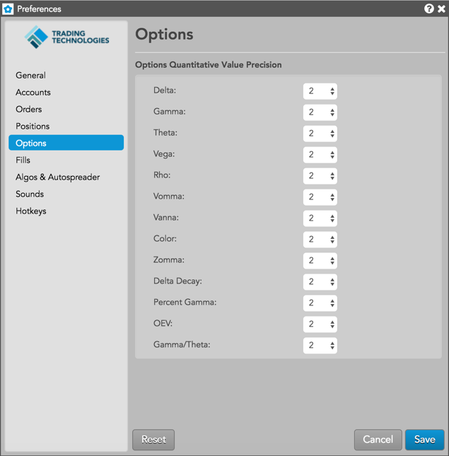

Use the Options tab to specify the level of precision displayed for Greeks and options risk metrics columns in all Options widgets.
To set the level of precision, click the drop-down list for each setting in the Options Quantitative Value Precision section shown below and select the number of decimal digits to display:

Note: Refresh each open Options widget after changing a value to display the new level of precision.